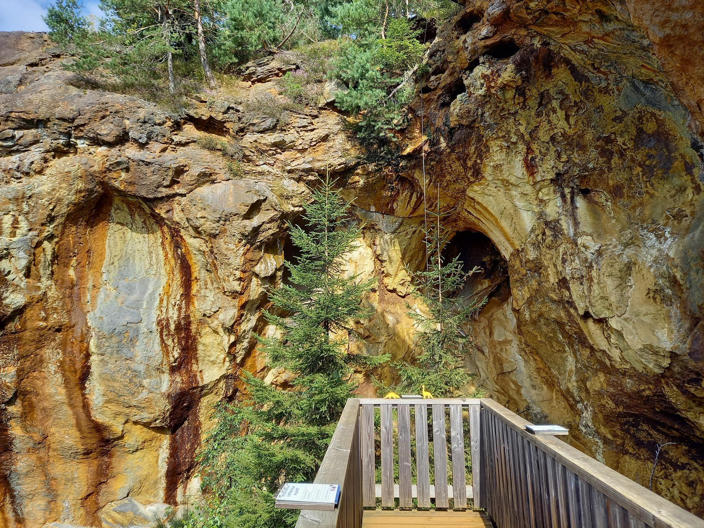
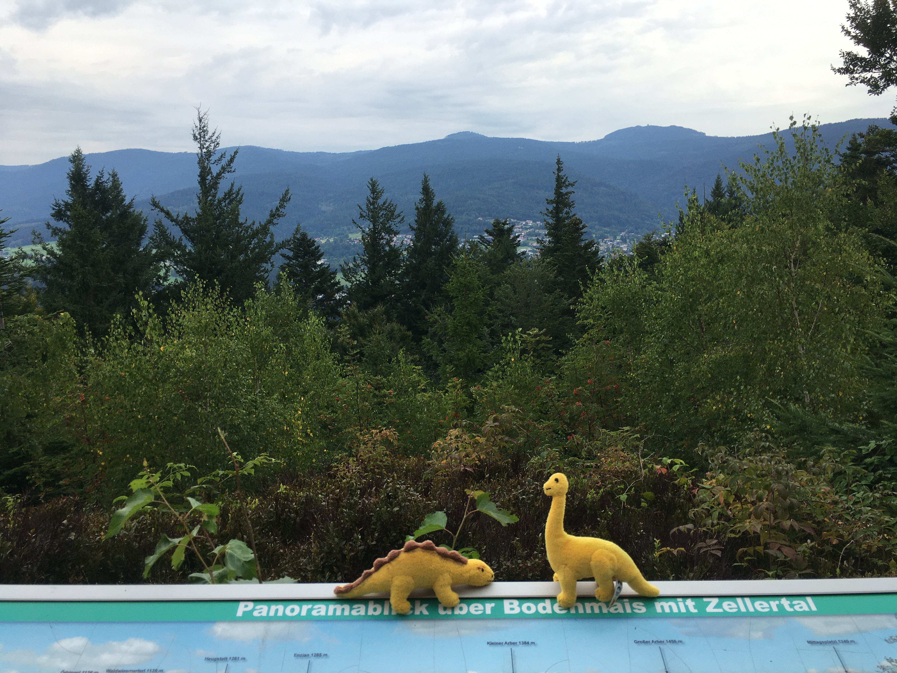
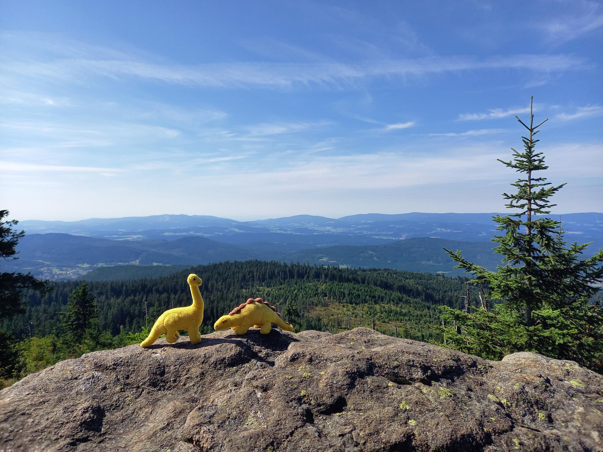

Seven Summits von Bodenmais
Der malerische Ort Bodenmais liegt mitten im Bayerischen Wald und ist damit ein Paradies für alle
Outdoor-Freaks.
Ein gut ausgebautes Netz an Wanderwegen lädt dazu ein, die Wanderschuhe zu schnüren und sofort
loszumarschieren.
Das Highlight für besonders ambitionierte Wanderer: Die Seven Summits von Bodenmais.
Dabei handelt es sich um die sieben höchsten Gipfel rund um Bodenmais.
Auf welche Naturerlebnisse ihr euch dabei freuen könnt, erfahrt ihr hier.
Großer Arber - 1456 m

Mit 1456 Metern der höchste Gipfel im Bayerischen Wald und damit auf der To-Do-Liste ganz oben.
Der klassische Weg auf den Großen Arber führt an den Rißloch-Wasserfällen vorbei über eine steinige Piste stetig bergauf.
Gutes Schuhwerk und Kondition sind hier gefragt. Weiter oben führt der Weg über ein paar Kuhweiden.
Bitte nicht wundern, wenn hier eine Horde Kühe auf euch zugestürmt kommt. Die letzten Meter muten direkt alpin an.
Auf dem Gipfel begegnet uns wieder die Zivilisation.
Dank Seilbahn kann für das obligatorische Gipfelfoto auch gecheatet werden.
Entsprechend groß ist die Herausforderung, ein Foto des Gipfelkreuzes ohne Beiwerk zu ergattert.
Belohnt wird, wer sich früh an den Aufstieg gemacht hat und auf dem Weg zurück ins Tal den Langschläfern
aufmunternd Zuspruch geben kann, dass es nur noch ein paar Hundert Höhenmeter bis zum Gipfel sind.
Mittagsplatzl - 1340 m

Wer nach dem Großen Arber noch nicht genug hat, kann auf dem Rückweg noch eine Schleife über das Mittagsplatzl drehen.
Dieser unscheinbare Gipfel liegt nur wenige Kilometer östlich des Großen Arbers.
Der sehr naturnahe Weg ist nicht bei Regenwetter zu empfehlen, lässt das Herz abenteuerlicherer Wanderer jedoch höher schlagen.
Der Gipfel selbst ist recht unscheinbar und das Gipfelkreuz nicht so einfach zu finden.
Die Aussicht leider ein wenig zugewachsen, aber dennoch einen Blick wert, da wir hier ausnahmsweise auch einmal nach Norden blicken können.
Silberberg - 955 m

Ein ganz anderes Naturschauspiel erwartet uns am Silberberg. Wer den Touristenströmen am Bergwerk entgehen möchte,
sollte früh aufbrechen und sich einen Rundweg entlang des Silbersteigs nicht entgehen lassen, der rund um den Silberberg führt.
Spektakulär ist auch die Gottesgab-Höhle - eine der obersten Gruben des Bergwerks, die mit ihrem rötlichen Gestein einen faszinierenden Anblick bietet.
Der Blick vom Gipfel ist einer der schönsten rund um Bodenmais und eine ausgiebige Foto-Session Pflicht.
Auf dem Rückweg sollte man sich eine Führung durch das Silberbergwerk auch nicht entgehen lassen.
Bergab geht es bequem mit der Sommerrodelbahn.
Kronberg - 1050 m

Weniger bekannt ist unser nächster Gipfel: Der Kronberg ist touristisch weniger gut erschlossen,
sodass man hier zwangläufig auch einmal ein paar Meter zu Fuß gehen muss, um ein Gipfelfoto zu erhaschen.
Der Weg ist angenehm einsam und naturnah. Der Blick vom Gipfel allerdings ein wenig zugewachsen.
Harlachberg - 913 m

Dank Gutsalm ist auf dem Harlachberg ein wenig mehr los, bis zum Gipfel schaffen es allerdings dann doch die wenigsten.
Bergab sei der Weg zurück durch den Märchenhain empfohlen.
Angesichts des zugewachsenen und sehr naturnahen Weges offensichtlich ein Geheimtipp, den man sich nicht entgehen lassen sollte.
Sternknöckel - 818 m

Der kleinste unter den Seven Summits, aber dennoch einen Besuch wert.
Dank der größere Entfernung zu den typischen Touristenrouten ist der Sternknöckel weniger stark frequentiert.
Der Weg zum Gipfel führt über angenehm federnde Waldwege auf geschwungenen Serpentinen bergauf.
Am Gipfelkreuz angekommen wird man von einem spektakulären Blick über Bodenmais belohnt.
Unbedingt das Panorama-Foto nicht vergessen.
Kleiner Arber - 1384 m

Last, but not least - der Kleine Arber. Der direkt Weg führt wie beim Großen Arber durch die Rießlochschlucht.
Beim Schachtenweg biegen wir jedoch zum kleinen Bruder des Großen Arber ab.
Die letzten paar hundert Meter nach der Chamer Hütte lassen das Herz jedes Wanderes nicht nur im übertragenen Sinne höher schlagen.
Trittsicherheit ist hier gefragt! Der Blick über Bodenmais ist die Anstrengung jedoch wert,
auch wenn man beim Aufstellen des Gipfelkreuzes offensichtlich nicht an eine fototaugliche Position gedacht hat.
Bergab ist wieder Vorsicht gefragt, um auf dem steilen Steig nicht abzurutschen.
Wer nach dem Kleinen Arber noch nicht genug Natur gesehen hat, sollte sich auf dem Rückweg einen Schlenker über
Heugstatt und Enzian nicht entgehen lassen.
Immer den Goldsteig entlang erinnert die Vegatation dabei an heideähnliche Landschaften.
Auch viel Gegenverkehr ist hier dank der abgelegenen Wege nicht zu befürchten.